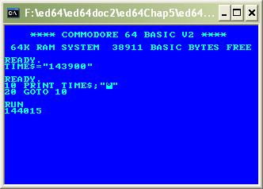

ED64 - HOW TO WRITE A
COMMODORE 64 EMULATOR
Copyright 2007 ir. Marc Dendooven
Chapter
5 : Emulating interrupts.
Introduction
In the last chapter we created a working c64 emulator. But because the standard interrupt routine is not used, TIME and TIME$ are not updated and the cursor is badly implemented. In this chapter we will implement interrupt handling for the processor.
Bug Fix.
The BRK instruction was badly implemented in previous versions. This is fixed now.
Interrupts
Introduction
Normally the processor executes in the main processor loop like explained in chapter one. This can be interrupted by setting a hardware pin of the processor chip to a low voltage. Then the current instruction is finished and a special interrupt routine is executed. PC is pushed on the stack so that after finishing the interrupt routine, normal execution can be resumed. In our emulator, we will create a procedure for the interrupt handling. Setting the interrupt pin low will be emulated by calling this procedure.
IRQ
The first interrupt is IRQ (Interrupt ReQuest). This is a maskable interrupt. It will not take place when the I flag is set. $FFFE contains the jump address.
procedure irq;
begin
if not flagset(I) then
begin
setflag(B,false);
push(hi(PC));
push(lo(PC));
push(P);
setflag(I,true);
PC := peek2($FFFE);
if keypressed then addkey
end
end;
In normal mode, the standard IRQ routine will be called. This routine will increment the clock, handle the cursor and check the keyboard. Since we have no real keyboard emulation yet, the 'if keypressed then addkey' line is added to the body of the IRQ procedure. Once we implement the keyboard, this line should be deleted.
NMI
The NMI (Non Maskable Interrupt) is almost the same. Since it is not maskable the I flag is not checked. Jumpaddress is found in $FFFA
procedure nmi;
begin
setflag(B,false);
push(hi(PC));
push(lo(PC));
push(P);
setflag(I,true);
PC := peek2($FFFA)
end;
BRK
An interrupt can also be started from software. The BRK instruction does this:
procedure brk;
begin
setflag(B,true);
inc(PC);
push(hi(PC));
push(lo(PC));
push(P);
setflag(I,true);
PC := peek2($FFFE)
end;
The jump vector is the same as the IRQ vector. The difference is made by setting the B flag. (Remark that BRK is a machine code instruction, IRQ and NMI are not).
RTI
After finishing an interrupt routine, normal execution is resumed by the RTI (Return From Interrupt) instruction.
procedure rti;
begin
P := pull;
PC := pull;
PC
:= PC + pull*256
end;
An interrupt call and its return statement are much like a subroutine call (JSR, RTS). The main difference is that in an interrupt call the P flag is pushed on the stack.
Reset
When the reset pin is set low, the processor is reset. This can be emulated just like an interrupt:
procedure reset;
begin
PC := peek2($FFFC);
setflag(I,true)
end;
Calling the IRQ in our emulator.
Like stated in previous chapters, the IRQ is called 50 times a second by a hardware clocksignal. We could use our counter to call the IRQ in place of the keyboard routine (the keyboard is already checked in the IRQ) but this would give an inaccurate value for the time. We can replace the counter value by a real time check:
var startTime : TDateTime;
timer50hz : Int64 = 20;
...
startTime := now;
in the irq routine, timer50Hz is incremented by 20ms.
timer50Hz := timer50Hz+20
and in the main loop:
if millisecondsbetween(now
,startTime)*6 > timer50Hz*5 then
begin
irq;
end
For some reason, the emulator behaves as an american (60Hz) computer. For the moment we fix this multiplying by 6 resp. 5 in the inequality.
You can check out the correct time by the following c64 basic program::

The symbol between the quotes is “cursor
up”.
We now have a real c64 cursor. Of course we have to switch off the crt cursor (by calling cursorOff) and we can delete the line that placed the crt cursor.
Conclusion.
This chapters replaces the crt cursor with the c64 native cursor. This is important for future development as we leave the crt screen for a graphic screen. TIME and TIME$ are updated.
In the next chapter we will use a
graphic screen to display the real characterset of the c64.
files: ed64.pas, memio.pas, vic.pas